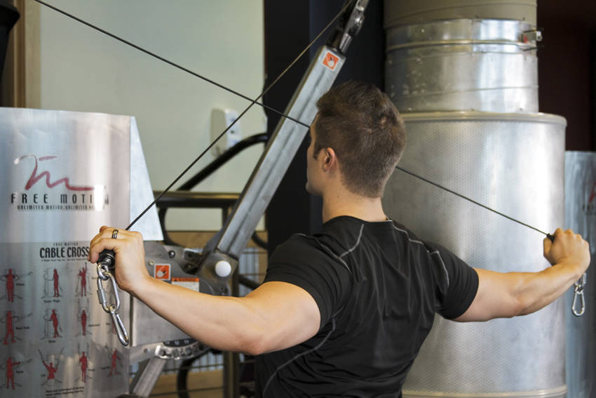

Pictured: Cable Rear Delt Fly — shown here as a reference image for this exercise.

- Elbows soft and fixed. Open the arms without letting your torso rock back to start the rep.

Pictured: Cable Rear Delt Fly — shown here as a reference image for this exercise.
